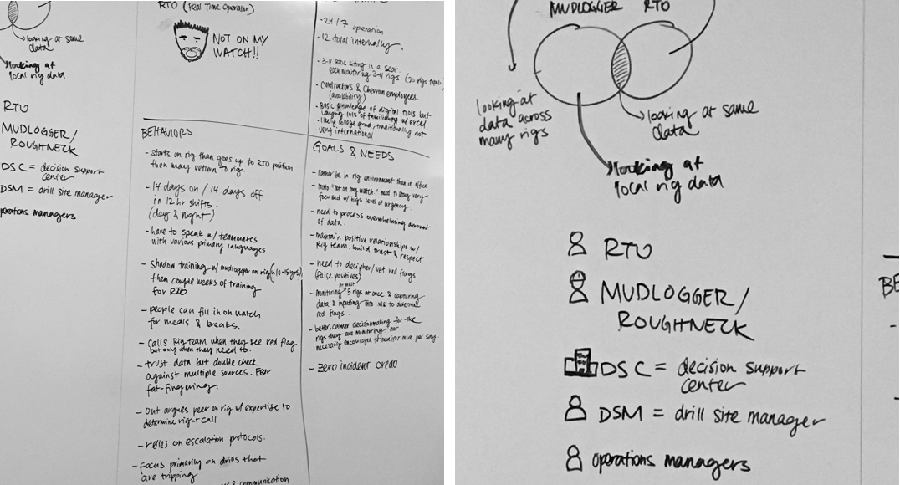
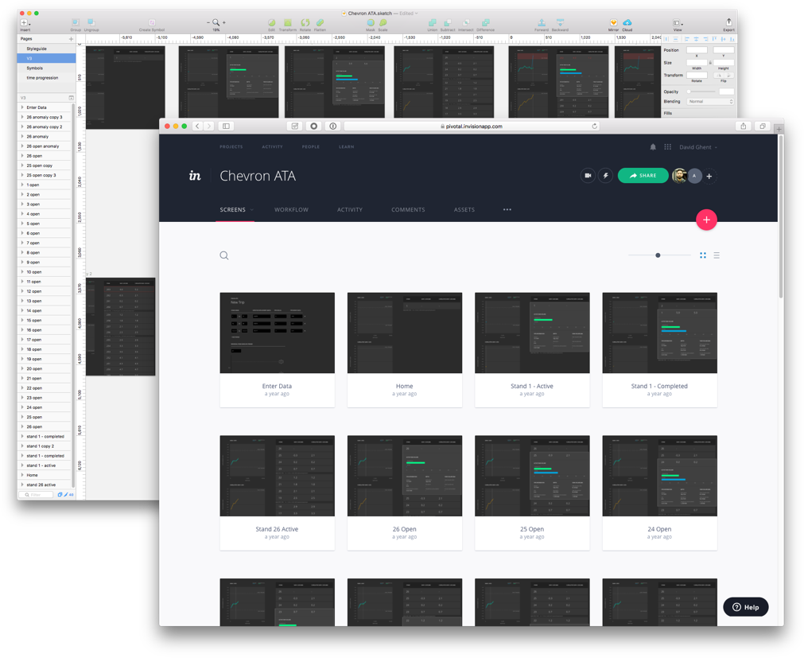
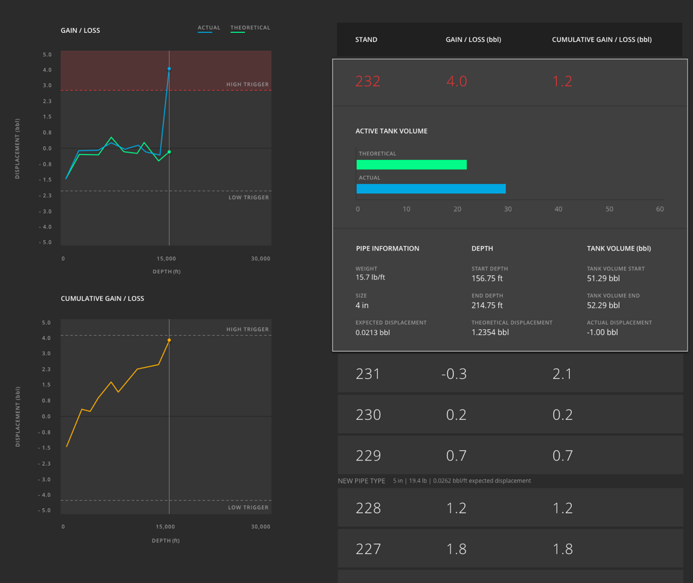

david@ghent.design
dribbble
medium
Chevron worked with us at Pivotal to improve the monitoring capabilities for offshore oil drilling facilities. These huge “rigs” are mainly overlooked by Real Time Operators (RTO’s) that are looking for anomolies in the data. An example would be changes in the displacement of the volume that could result in dangerous outcomes. Basically, these folks are responsible if the rig blows up.
In the first few weeks of the project we worked on understanding the problem space. We decided to solve problems for the RTO's first, within the scope of our MVP.
After more context building and a number of interviews with various RTO's and more stakeholders, our team was ready to sketch out some ideas.
Our main goal was to prioritize the most important data about the drilling run, or “trip”, to make sure the RTO was able to scan actionable information faster. We wanted to learn more about what data was relevant, when, and how often. We got to work and started rapidly prototyping (sketch+invision) to test with more RTO's.
As each drill stand was getting attached, our interface needed to show the gain/loss data and inform the RTO's of any anomalies in their drills, fill tanks, and displacement tanks.
To simulate the incoming information before our data scientist could wrangle our test data into SQL, I animated a normal data flow in After Effects. We continued to test both our clickable InVision prototype and simulation video to stakeholders and RTO's to get feedback. Take a look at the video rendering for a simulation of what the app looks like.
We decided a layout that favored 3 main data changes: new stands coming in - each with their gain/loss data associated with them, as well as a line graph of the overall gain/loss, and cumulative gain/loss. Deviant data in any of these areas prompted the RTO's to take action.